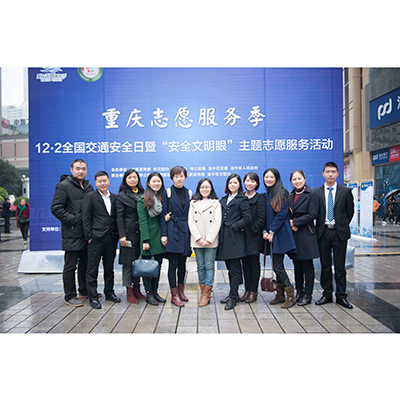

-

我所主任易涛律师受聘西南大学法学院硕士生实务导师
12月3日，西南大学法学院举办2016年“法律硕士实务导师聘任暨高层次实务型法律人才培养座谈会”，重庆原驰律师事务所主任 易涛律师受聘西南大学法学院硕士生实务导师。原驰律所始终坚持“校企合作，共同发展”的人才培养模式，这次本所律师受聘西南大学，将有效促进我所和高校之间的联系，形成法学学术和司法实务的良性互动，实现高校和律所的互利共赢和共同发展。
-
原驰律所周勤华律师受邀主讲“2016年度北京市物业管理纠纷人民调解班”
随着全国第五个122“全国交通安全日”主题活动的到来，由中共重庆市委宣传部、市公安局、渝中区区委区政府主办，市公安局交通管理局、渝中区委宣传部承办的“122全国交通安全日暨安全文明眼主题志愿服务活动”于12月2日正式启动，并在解放碑设立主会场。
 -

原驰律师助力重庆交巡警总队交通安全主题活动
随着全国第五个122“全国交通安全日”主题活动的到来，由中共重庆市委宣传部、市公安局、渝中区区委区政府主办，市公安局交通管理局、渝中区委宣传部承办的“122全国交通安全日暨安全文明眼主题志愿服务活动”于12月2日正式启动，并在解放碑设立主会场。
-
原驰律所周勤华律师受邀主讲“2016年度北京市物业管理纠纷人民调解班”
申请再审人中国银行股份有限公司汕头分行(以下简称中行汕头分行)为与被申请人广东发展银行股份有限公司韶关分行 (原名 申请再审人中国银行股份有限公司汕头分行申请再审人中国银行股份有限公司汕头分行申请再审人中国银行股份有限公司汕头分行申请再审人中国银行股份有限公司汕头分行申请再审人中国银行股份有限公司汕头分行申请再审人中国银行股份有限公司汕头分行